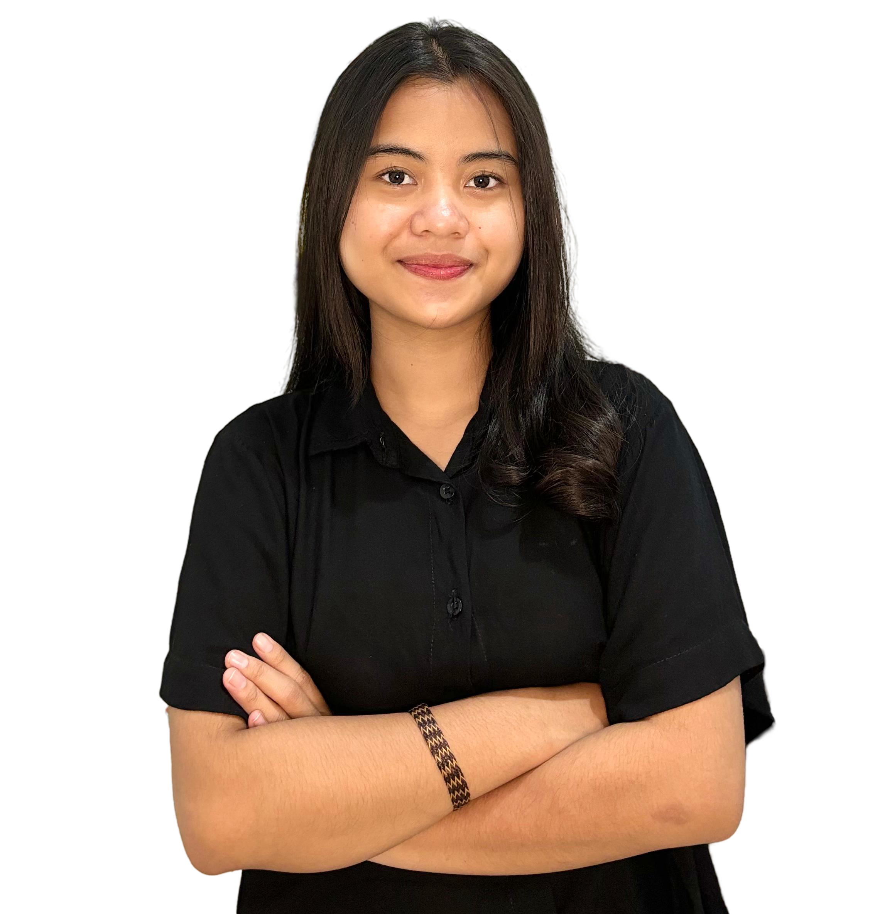

ARDELIA LUTHFI AGATA
Bandung, Jawa Barat | 📞(+62)877-4901-9312 | 📧ardeliagatha@gmail.com
🔗www.linkedin.com/ardeliagatha
📷www.instagram.com/ardeliagatha
Mahasiswa tingkat tiga S1 Sistem Informasi di Telkom University dengan minat kuat dalam kepemimpinan, analisis data, dan bisnis. Bertekad untuk mengeksplorasi pengalaman baru guna memperkaya pengetahuan dan menguasai karakter. Terbiasa menghadapi tantangan dan memiliki kemampuan adaptasi yang tinggi di lingkungan yang baru.
PENGALAMAN ORGANISASI DAN KEPANITIAAN
UKM BAND
Pengurus Inti (Bendahara)
April 2023 - Now
- Bertanggung jawab dalam segala keuangan UKM Band
- Mengaturkas seluruh pengurus dan anggota
- Bertanggung jawab dalam keuangan pembelian hoodie pengurus dan anggota
Anggota Divisi Acara Open Mind
- Merencanakan dan melaksanakan flow serta konsep tema acara
- Mencari ide tagline tema acara
- Menjadi MC selama acara berlangsung
Anggota Divisi Acara Audisi Anggota Baru
- Merencanakan dan melaksanakan flow serta konsep tema acara
- Menjadi Time Keeper selama acara berlangsung
Pengurus Inti (Bendahara) Mini Gigs Novastra 2024
- Melakukan penetapan Dana Awal Panitia
- Bertanggung jawab mengumpulkan pembayaran DAP seluruh pengurus dan anggota
- Bertanggung jawab untuk media perantara pembayaran Vendor dan Eksternal
SAG PRACTICUM LABORATORY TELKOM UNIVERSITY
Anggota Divisi Tools & Support mata kuliah Pemodelan Proses Bisnis
31 Agustus 2024 - Now
- Bertanggung jawab untuk membuat modul 0 (tentang instalasi perangkat)
- Bertanggung jawab atas pengaturan tools yang akan digunakan selama praktikum
- Bertanggung jawab menjadi pemecah masalah saat terjadi kesalahan
TENCOM HMSI
Anggota Divisi Materi
September 2023 - Now
- Membuat materi bahan ajar untuk adik tingkat demi mempersiapkan UTS maupun UAS
- Melakukan pembelajaran mengajar secara offline maupun online untuk responsi UTS maupun UAS
- Melakukan CTC pengenalan Tencom HMSI kepada adik tingkat
ERP LABORATORY TELKOM UNIVERSITY
Staff Tetap Divisi Competition
2023- Now
- PJ 101 Competition dengan mencari konten untuk postingan instagram ERP Lab
Panitia Mini Contest ERP 2024
- Membuat project case untuk perlombaan
- Membuat range penilaian kriteria lomba
STAFF ALPHA BPMSI
Anggota Divisi Logistik PPUH BPMSI
Oktober 2023- Januari 2024
- Menyiapkan ruangan untuk acara sosialisasi timeline PPUH BPMSI
- Melakukan handle Breakout Room saat pemilihan Kahim dan Wakahim
- Menyiapkan kebutuhan konsumsi
UKM DAERAH CASTELO TELKOM UNIVERSITY
Anggota Divisi Humas Panitia RollerCoaster
2022
- Roadshow ke beberapa SMA Jawa Tengah untuk mempromosikan Telkom University
- Expo Campus Tour ke beberapa SMA di Jawa Tengah
Anggota Divisi Marketing
- Membuat konten acara di Tiktok serta Instagram
- Merencanakan dan melakukan jadwal unggah konten
- Memasarkan tiket acara dengan minimal penjualan 100 tiket
PENGALAMAN KEPEMIMPINAN
EKSTRAKURIKULER SMA
Ketua Umum Ekstra Kesenian Nasional
2019
- Memimpin Ekstra selama masa jabatan 1 tahun
Anggota Divisi Marketing
- Menjadi penghubung antara OSIS dengan Ekstra Kesenian Nasional
Ketua Orkestra Musik
- Memimpin orkestra musik di sekolah
ADDITIONAL
Technical Skill:
- Business: Bizagi Modeler
- Visual Paradigm
- Project Management: Microsoft Office (Word, Excel, PowerPoint), Google Suite (Docs, Sheets, Slides)
- Video Editing: Capcut
- Graphic Design: Canva, Adobe Lightroom
Soft Skill:
- Bertanggung Jawab
- Public Speaking
- Kepemimpinan
- Kerja Tim
Language: Indonesian, English
PENGALAMAN KEJUARAAN
KALBE JUNIOR SCIENTIST AWARD 2016
2016
- Lomba penelitian dan penemuan alat baru tingkat nasional
- Finalis KJSA Award 2016
- Pemenang Terfavorit peneliti Cilik KJSA Awards 2016 tingkat Nasional
PENDIDIKAN
TELKOM UNIVERSITY
2022 - Now
- IPK Semester 1 : 3,93
- IPK Semester 2 : 3,93
- IPK Semester 3 : 3,63
- IPK Semester 4 : 4,00
SMAN 3 SURAKARTA
2019 - 2022
- Peminatan Ilmu Pengetahuan Alam (IPA)